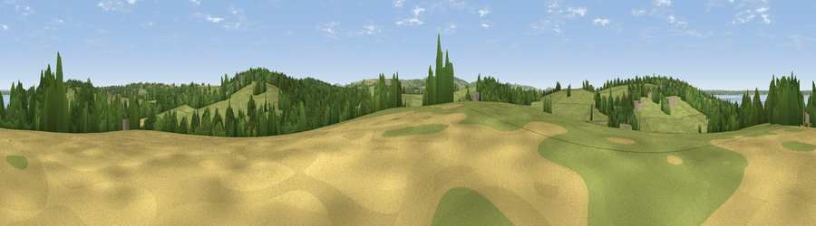

Viewpoint near Porchfield
#38134 in England · top 65% of its area beats it · near PorchfieldWhere it is
The exact computed spot (SZ 45925 92425). Click the marker for map links.
The view, rendered

A 360° render of this exact spot computed from the terrain model, tree cover and land cover — summer colours, afternoon light, calibrated against photographs of famous viewpoints. Real trees, hedges and buildings will differ in detail.
The panorama
Grey silhouette: terrain skyline in each direction (720 bearings, Earth curvature and refraction included). Dashed green: skyline with trees (+15 m) and buildings (+8 m) as obstacles. Blue strip: how far the ground is visible on each bearing.
Where the view opens
Wedge length = distance to the farthest visible ground on that bearing (vegetation-aware). Rings at 10, 25 and 50 km.
What fills the view
61% grassland · 24% woodland · 8% water · 5% cropland · 2% built-up ·
Angular shares of the visible panorama (visual magnitude), not map area. Landscape diversity 0.48 (0–1 Shannon).
Key numbers
More beautiful places nearby
The staircase of upgrades: each row has a higher view potential than everything closer. Driving times are estimates from straight-line distance, calibrated against real road routing — check an actual route before setting out.
| Place | Direction | Drive | Score |
|---|---|---|---|
| Viewpoint near Porchfield | WNW · 1 km | ~4 min | 45.7 |
| Viewpoint near Porchfield | W · 2 km | ~6 min | 54.2 |
| Viewpoint near Carisbrooke | SSE · 5 km | ~10 min | 72.1 |
| Viewpoint near Gatcombe | SSE · 7 km | ~15 min | 72.3 |
| Limerstone Down | SSW · 9 km | ~18 min | 84.5 |
| Mottistone Down | SW · 9 km | ~18 min | 87.2 |
| St Catherines Hill | SSE · 16 km | ~28 min | 87.6 |
| Viewpoint near Chale | S · 17 km | ~29 min | 88.3 |
50.72964, -1.35067 · source: screening · position refined by local search. Computed location — check access rights before visiting.